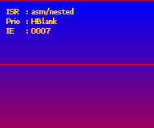
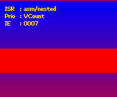
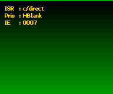

16. 中断
简介
在某些条件下,你可以让 CPU 放下手头正在做的事,转而去运行另一个函数,之后再继续执行原来的进程。这个过程被称为中断(interrupt,请拼两个“r“)。处理中断的函数称为中断服务程序(interrupt service routine),简称中断;触发一个中断叫做引发(raising)一个中断。
中断通常附着于某些硬件事件:例如,按下 PC 键盘上的一个键就会引发一个中断。PC 的另一个例子是 VBlank(没错,PC 也有 VBlank)。GBA 有类似的中断,以及用于 HBlank、DMA 等等的其他中断。最后一个尤其可以用于大量的巧妙效果。我很快就会给出中断的完整列表。
中断会暂停当前进程,快速做“某件事“,然后交还控制权。请重读“快速“二字:中断应当是短小的例程。
中断寄存器
有三个专门用于中断的寄存器:REG_IE (0400:0200h)、REG_IF (0400:0202h) 和 REG_IME (0400:0208h)。REG_IME 是主中断控制;除非它被设为“1“,否则中断会被完全忽略。要启用特定中断,你需要在 REG_IE 中设置相应的位。当中断发生时,REG_IF 中相应的位会被置位。要确认你已经处理了某个中断,需要再次清除该位,但清除的方式至少可以说有点反直觉。要确认中断,你实际上必须再次置位该位。没错,你必须向该位(它已经是 1)写入 1 才能清除它。
除了在 REG_IE 中设置位之外,你还需要在与该主题相关的其他寄存器中设置一位。例如,HBlank 中断还需要 REG_DISPSTAT 中的一位。我想(但如果我错了请纠正我),你既需要中断的发送方也需要接收方;REG_IE 控制接收方,而像 REG_DISPSTAT 这样的寄存器控制发送方。考虑到这一点,让我们看看 REG_IE 和 REG_IF 的位布局。
| F E | D | C | B A 9 8 | 7 | 6 5 4 3 | 2 | 1 | 0 |
| - | C | K | Dma | Com | Tm | Vct | Hbl | Vbl |
| bits | name | define | description |
|---|---|---|---|
| 0 | Vbl | IRQ_VBLANK | VBlank 中断。还需要
REG_DISPSTAT{3}
|
| 1 | Hbl | IRQ_HBLANK | HBlank 中断。还需要
REG_DISPSTAT{4}，发生在 HDraw 之后，
因此这里的更改会在下一行生效。
|
| 2 | Vct | IRQ_VCOUNT | VCount interrupt. Also requires
REG_DISPSTAT{5}. The high byte of
REG_DISPSTAT 给出触发该中断的 VCount 值。
中断发生在扫描线的开头。
|
| 3-6 | Tm | IRQ_TIMERx | Timer interrupt, 1 bit per timer. Also requires
REG_TMxCNT{6}. The interrupt will be raised
when the timer overflows.
|
| 7 | Com | IRQ_COM | 串行通信 中断。此外还需要
REG_SCCNT{E}。在整个传输完成时触发。
至少我是这么听说的，我对串行通信其实一窍不通。
|
| 8-B | Dma | IRQ_DMAx | DMA 中断，每个通道 1 位。还需要
REG_DMAxCNT{1E}。在整个传输完成时触发。
|
| C | K | IRQ_KEYPAD | 按键 中断。还需要
REG_KEYCNT{E}。当 REG_KEYCNT 中指定的
任意一个或所有按键被按下时触发。
|
| D | C | IRQ_GAMEPAK | 卡带 中断。在卡带从 GBA 中拔出时触发。 |
中断服务程序
你使用上述中断寄存器来指明你想使用哪些中断。下一步是编写一个中断服务程序。这只是一个无类型的函数(void func(void));一个很像其他许多函数的 C 函数。下面是一个 HBlank 中断的例子。
void hbl_pal_invert()
{
pal_bg_mem[0] ^= 0x7FFF;
REG_IF = IRQ_HBLANK;
}
第一行反转调色板内存第一个条目的颜色。第二行重置 REG_IF 的 HBlank 位,表示中断已被处理。由于这是一个 HBlank 中断,最终结果是颜色每一条扫描线都变化一次。这应该不难想象。
如果你简单地将这个函数添加到一个已有的程序中,什么都不会改变。怎么会这样?嗯,虽然你现在有了一个 isr,你仍然需要告诉 GBA 去哪里找它。为此,我们需要更仔细地审视整个中断过程。
正确确认中断
要确认一个中断已被处理,你必须置位 REG_IF 中该中断的位,而且只有那一位。这意味着“<code>REG_IF <b>=</b> IRQ_<i>x</i></code>“通常是正确的做法,而不是”<code>REG_IF <b>|=</b> IRQ_<i>x</i></code>“。|= 版本会确认所有已被引发的中断,即使你还没有处理它们。
通常,这两种做法结果相同,但如果多个中断同时到来,事情就会变糟。只要注意你在做什么就好。
中断处理过程
完整的中断过程有点棘手,而且其中一部分完全超出了你的控制。下面是你,程序员,需要知道的清单。完整说明,请参见 GBATEK : irq control。
- 中断发生。BIOS 最深处地牢中的一些黑魔法发生,CPU 切换到 IRQ 模式和 ARM 状态。一些寄存器(
r0-r3, r12, lr)被压入栈。 - BIOS 加载位于
0300:7FFC的地址,并跳转到该地址。 - 由
0300:7FFC指向的代码被执行。由于我们现在处于 ARM 状态,这段代码必须是 ARM 代码! - 在 isr 完成后,通过写入
REG_IF确认中断已被处理,然后通过发出bx lr指令从 isr 返回。 - 先前保存的寄存器从栈中弹出,程序状态恢复正常。
步骤 1、2 和 5 由 BIOS 完成;3 和 4 是你的。现在,原则上你只需将你的 isr 的地址放入地址 0300:7FFC。为了让我们的工作轻松一点,我们首先为自己创建一个函数指针类型。
typedef void (*fnptr)(void);
#define REG_ISR_MAIN *(fnptr*)(0x03007FFC)
// Be careful when using it like this, see notes below
void foo()
{
REG_ISR_MAIN= hbl_pal_invert; // tell the GBA where my isr is
REG_DISPSTAT |= VID_HBL_IRQ; // Tell the display to fire HBlank interrupts
REG_IE |= IRQ_HBLANK; // Tell the GBA to catch HBlank interrupts
REG_IME= 1; // Tell the GBA to enable interrupts;
}
现在,这多半能工作,但像往常一样,故事还有更多内容。
- 首先,
REG_ISR_MAIN跳转到的代码必须是 ARM 代码!如果你用-mthumb标志编译,整个事情会戛然而止。 - 当你在中断内部被中断时会发生什么?嗯,这实际上不太可能;除非你做一些我们稍后会讲到的花哨操作。你看,
REG_IME并不是唯一允许中断的东西,程序状态寄存器(program status register,PSR)中也有一个用于 irq 的位。当引发中断时,CPU 会在整个事情结束并处理完之前禁用那里的中断。 hbl_pal_invert()不会检查它是否由 HBlank 中断激活。现在,在这种情况下这并不重要,因为它是唯一被启用的中断,但当你使用不同类型的中断时,区分它们至关重要。这就是为什么我们将在下一节创建一个中断交换台。- 最后,当你使用需要中断的 BIOS 调用 时,你也需要在
REG_IFBIOS(==0300:7FF8)中确认它们。其用法与REG_IF相同。
On section mirroring
GBA 的内存段每隔若干字节就会镜像一次。例如 IWRAM (0300:0000) 每 8000h 字节镜像一次,因此 0300:7FFC 也就是 03FF:FFFC,或 0400:0000−4。虽然这样更快,但我不太确定是否应该利用这一点。no$gba v2.2b 将其标记为错误,尽管这显然是一个小疏忽,并在 v2.2c 中修复了。不过,已经提醒过你了。
创建中断交换台
hbl_pal_invert() 函数是一个单一中断的例子,但你可能需要处理多个中断。你可能还希望能够根据情况使用不同的 isr,在这种情况下,把所有东西都塞进一个函数可能不是最好的做法。相反,我们将创建一个中断交换台(interrupt switchboard)。
中断交换台的工作方式有点像电话交换台:你有一个来电(即 REG_IF 中的一个中断)进来,操作员检查它是不是一个活跃的号码(与 REG_IE 比较),如果是,则将来电连接到正确的接收方(你的 isr)。
这个特定的交换台还附带一些额外特性。它会在 REG_IF 和 REG_IFBIOS 中确认来电,即使该中断实际上没有附接任何 ISR。它还会允许嵌套中断,尽管这需要在 ISR 本身中做一点额外工作。
设计与接口考量
实际的交换台只是整体的一部分;我还需要几个结构、变量和函数。我需要的基本项目如下。
__isr_table[]。一个中断表。这是一个指向不同 isr 的函数指针表。由于中断应当有优先级,该表还应指明这些指针属于哪个中断。为此,我们将使用一个IRQ_REC结构。irq_init()/irq_set_master()。设置主 isr。irq_init()也初始化中断表以及中断本身。irq_enable()/irq_disable()。用于启用和禁用中断的函数。它们会同时处理REG_IE以及发送方位所在的任何寄存器。我将这些位保存在一个名为__irq_senders[]的内部表中,为了能使用它们,这些函数的输入参数需要是中断的索引,而不是中断标志本身。这就是为什么我为IRQ_foo标志准备了对应的II_foo。irq_set()/irq_add()/irq_delete()。用于添加/删除中断服务程序的函数。第一个允许 isr 的完整优先级排序;irq_add()会替换给定中断当前的 irs,或在列表末尾添加一个;irq_delete()会删除一个并纠正列表中的空位。
所有这些函数都做类似的事:禁用中断(REG_IME=0),做它们的事,然后重新启用中断。这是个好主意,因为在鼓捣中断时被中断并不好看。与 service routine 相关的函数还会接受一个函数指针(fnptr 类型),并返回一个函数指针以指示先前的 isr。如果你想尝试将它们链式连接,这可能有用。
下面你可以看到结构、表,以及 irq_enable() 和 irq_add() 的实现。在两个函数中,__irq_senders[] 数组用于确定在哪个寄存器设置哪个位以确保发送中断请求。irq_add() 函数接着去寻找当前表中要替换的所请求中断,或一个空槽来填充。其他例程类似。如果你需要看更多,请查看 libtonc 中的 tonc_irq.h/.c。
//! Interrups Indices
typedef enum eIrqIndex
{
II_VBLANK=0, II_HBLANK, II_VCOUNT, II_TIMER0,
II_TIMER1, II_TIMER2, II_TIMER3, II_SERIAL,
II_DMA0, II_DMA1, II_DMA2, II_DMA3,
II_KEYPAD, II_GAMEPAK,II_MAX
} eIrqIndex;
//! Struct for prioritized irq table
typedef struct IRQ_REC
{
u32 flag; //!< Flag for interrupt in REG_IF, etc
fnptr isr; //!< Pointer to interrupt routine
} IRQ_REC;
// === PROTOTYPES =====================================================
IWRAM_CODE void isr_master_nest();
void irq_init(fnptr isr);
fnptr irq_set_master(fnptr isr);
fnptr irq_add(enum eIrqIndex irq_id, fnptr isr);
fnptr irq_delete(enum eIrqIndex irq_id);
fnptr irq_set(enum eIrqIndex irq_id, fnptr isr, int prio);
void irq_enable(enum eIrqIndex irq_id);
void irq_disable(enum eIrqIndex irq_id);
// IRQ Sender information
typedef struct IRQ_SENDER
{
u16 reg_ofs; //!< sender reg - REG_BASE
u16 flag; //!< irq-bit in sender reg
} ALIGN4 IRQ_SENDER;
// === GLOBALS ========================================================
// One extra entry for guaranteed zero
IRQ_REC __isr_table[II_MAX+1];
static const IRQ_SENDER __irq_senders[] =
{
{ 0x0004, 0x0008 }, // REG_DISPSTAT, DSTAT_VBL_IRQ
{ 0x0004, 0x0010 }, // REG_DISPSTAT, DSTAT_VHB_IRQ
{ 0x0004, 0x0020 }, // REG_DISPSTAT, DSTAT_VCT_IRQ
{ 0x0102, 0x0040 }, // REG_TM0CNT, TM_IRQ
{ 0x0106, 0x0040 }, // REG_TM1CNT, TM_IRQ
{ 0x010A, 0x0040 }, // REG_TM2CNT, TM_IRQ
{ 0x010E, 0x0040 }, // REG_TM3CNT, TM_IRQ
{ 0x0128, 0x4000 }, // REG_SCCNT_L BIT(14) // not sure
{ 0x00BA, 0x4000 }, // REG_DMA0CNT_H, DMA_IRQ>>16
{ 0x00C6, 0x4000 }, // REG_DMA1CNT_H, DMA_IRQ>>16
{ 0x00D2, 0x4000 }, // REG_DMA2CNT_H, DMA_IRQ>>16
{ 0x00DE, 0x4000 }, // REG_DMA3CNT_H, DMA_IRQ>>16
{ 0x0132, 0x4000 }, // REG_KEYCNT, KCNT_IRQ
{ 0x0000, 0x0000 }, // cart: none
};
// === FUNCTIONS ======================================================
//! Enable irq bits in REG_IE and sender bits elsewhere
void irq_enable(enum eIrqIndex irq_id)
{
u16 ime= REG_IME;
REG_IME= 0;
const IRQ_SENDER *sender= &__irq_senders[irq_id];
*(u16*)(REG_BASE+sender->reg_ofs) |= sender->flag;
REG_IE |= BIT(irq_id);
REG_IME= ime;
}
//! Add a specific isr
fnptr irq_add(enum eIrqIndex irq_id, fnptr isr)
{
u16 ime= REG_IME;
REG_IME= 0;
int ii;
u16 irq_flag= BIT(irq_id);
fnptr old_isr;
IRQ_REC *pir= __isr_table;
// Enable irq
const IRQ_SENDER *sender= &__irq_senders[irq_id];
*(u16*)(REG_BASE+sender->reg_ofs) |= sender->flag;
REG_IE |= irq_flag;
// Search for previous occurance, or empty slot
for(ii=0; pir[ii].flag; ii++)
if(pir[ii].flag == irq_flag)
break;
old_isr= pir[ii].isr;
pir[ii].isr= isr;
pir[ii].flag= irq_flag;
REG_IME= ime;
return old_isr;
}
主中断服务程序
主 ISR 的主要任务是在 ___isr_table 中寻找引发的中断,并在 REG_IF 和 REG_IFBIOS 中确认它。如果有特定于某 irq 的 service routine,它应当调用它;否则,它应当直接返回 BIOS。在 C 中,它大概是这样:
// This is mostly what libtonc's isr_master does, but
// you really need asm for the full functionality
IWRAM_CODE void isr_master_c()
{
u32 ie= REG_IE;
u32 ieif= ie & REG_IF;
IRQ_REC *pir;
// (1) Acknowledge IRQ for hardware and BIOS.
REG_IF = ieif;
REG_IFBIOS |= ieif;
// (2) Find raised irq
for(pir= __isr_table; pir->flag!=0; pir++)
if(pir->flag & ieif)
break;
// (3) Just return if irq not found in list or has no isr.
if(pir->flag == 0 || pir->isr == NULL)
return;
// --- If we're here have an interrupt routine ---
// (4a) Disable IME and clear the current IRQ in IE
u32 ime= REG_IME;
REG_IME= 0;
REG_IE &= ~ieif;
// (5a) CPU back to system mode
//> *(--sp_irq)= lr_irq;
//> *(--sp_irq)= spsr
//> cpsr &= ~(CPU_MODE_MASK | CPU_IRQ_OFF);
//> cpsr |= CPU_MODE_SYS;
pir->isr(); // (6) Run the ISR
REG_IME= 0; // Clear IME again (safety)
// (5b) Back to irq mode
//> lr_sys = *sp_sys++;
//> cpsr &= ~(CPU_MODE_MASK | CPU_IRQ_OFF);
//> cpsr |= CPU_MODE_IRQ | CPU_IRQ_OFF;
//> spsr = *sp_irq++
//> lr_irq = *sp_irq++;
// (4b) Restore original ie and ime
REG_IE= ie;
REG_IME= ime;
}
这些要点大多已经讨论过,所以我不再重复。请注意确认 REG_IF 和 REG_IFBIOS 的区别:前者使用简单赋值,后者使用 |=。步骤 4、5 和 6 仅当当前 IRQ 有自己的 service routine 时才执行。步骤 4a 和 5a 作为初始化步骤,确保 ISR(步骤 6)能在 CPU 模式下工作,并且除非它要求,否则不能被中断。步骤 4b 和 5b 撤销 4a 和 5a。
这个例程在 C 中可以正常工作,如果不是因为项目 5a 和 5b 的话。这些是将 CPU 模式设置/恢复为 system/irq 模式的代码,但必要的指令在 C 中不可用。另一个问题是链接寄存器(用于保存函数返回地址)必须以某种方式保存,而这些在 C 中绝对不可用。
注意:我说的是寄存器,复数!每种 CPU 模式都有自己的栈和链接寄存器,即使名字相同(lr 和 sp),它们也确实不相同。通常一个 C 例程会自己保存 lr,但既然现在你需要它两次,把它留给编译器就非常不安全了。除此之外,你还需要保存已保存程序状态寄存器 spsr,它表示中断发生时的程序状态。这是另一件 C 真的做不了的事。因此,主 ISR 需要汇编。
那么,就用汇编吧。下面的函数是 `irs_master_c()` 的汇编等价物。它几乎是逐行翻译,尽管我利用了指令集的一些编译器不会或不愿使用的特性。我不指望你真能理解这里写的一切,但发挥一点想象力,你应该能跟上大部分。教授汇编*远远*超出了本章的范围,但在我看来值得付出努力。Tonc 的[汇编章节](asm.html)应该能给你理解其中大部分内容所需的信息,并指出进一步学习的方向。
.file "tonc_isr_master.s"
.extern __isr_table;
/*! \fn IWRAM_CODE void isr_master()
\brief Default irq dispatcher (no automatic nesting)
*/
.section .iwram, "ax", %progbits
.arm
.align
.global isr_master
@ --- Register list ---
@ r0 : ®_IE
@ r1 : __isr_table / isr
@ r2 : IF & IE
@ r3 : tmp
@ ip : (IF<<16 | IE)
isr_master:
@ Read IF/IE
mov r0, #0x04000000
ldr ip, [r0, #0x200]!
and r2, ip, ip, lsr #16 @ irq= IE & IF
@ (1) Acknowledge irq in IF and for BIOS
strh r2, [r0, #2]
ldr r3, [r0, #-0x208]
orr r3, r3, r2
str r3, [r0, #-0x208]
@ (2) Search for irq.
ldr r1, =__isr_table
.Lirq_search:
ldr r3, [r1], #8
tst r3, r2
bne .Lpost_search @ Found one, break off search
cmp r3, #0
bne .Lirq_search @ Not here; try next irq
@ (3) Search over : return if no isr, otherwise continue.
.Lpost_search:
ldrne r1, [r1, #-4] @ isr= __isr_table[ii-1].isr
cmpne r1, #0
bxeq lr @ If no isr: quit
@ --- If we're here, we have an isr ---
@ (4a) Disable IME and clear the current IRQ in IE
ldr r3, [r0, #8] @ Read IME
strb r0, [r0, #8] @ Clear IME
bic r2, ip, r2
strh r2, [r0] @ Clear current irq in IE
mrs r2, spsr
stmfd sp!, {r2-r3, ip, lr} @ sprs, IME, (IE,IF), lr_irq
@ (5a) Set mode to sys
mrs r3, cpsr
bic r3, r3, #0xDF
orr r3, r3, #0x1F
msr cpsr, r3
@ (6) Call isr
stmfd sp!, {r0,lr} @ ®_IE, lr_sys
mov lr, pc
bx r1
ldmfd sp!, {r0,lr} @ ®_IE, lr_sys
@ --- Unwind ---
strb r0, [r0, #8] @ Clear IME again (safety)
@ (5b) Reset mode to irq
mrs r3, cpsr
bic r3, r3, #0xDF
orr r3, r3, #0x92
msr cpsr, r3
@ (4b) Restore original spsr, IME, IE, lr_irq
ldmfd sp!, {r2-r3, ip, lr} @ sprs, IME, (IE,IF), lr_irq
msr spsr, r2
strh ip, [r0]
str r3, [r0, #8]
bx lr
Nested irqs are nasty
在你只懂皮毛的情况下,让嵌套中断例程工作可不是令人愉快的练习。例如,不同的 CPU 模式使用不同的栈,这一点我花了一阵才弄明白;而我花了相当长时间才意识到我的嵌套 isr 不工作的原因是也有不同的链接寄存器。
isr_master_nest 很大程度上基于 libgba 的中断分发器,但也借鉴了 GBATEK 以及 A. Bilyk 和 DekuTree 对整个事情的分析,如 forum:4063 所述。同样 invaluable(非常宝贵)的是 no$gba 的家用调试器版本,断点万岁。
如果你想开发自己的中断例程,这些资料会极大地帮助你,并将 sanity(理智)的损失控制在尚可接受的水平。
Deprecation notice
我以前有一个不同的主 service routine,它会自动处理嵌套和优先级排序。因为它被认为太复杂,已被替换为这个。
嵌套中断仍然是可能的,但现在你必须自己在 isr 内部标明可中断性。
嵌套中断演示
今天的演示展示了上述所有内容的一小部分:
- 它将通过一个 HBlank 中断在屏幕上显示颜色渐变。
- 它允许你在两个不同的主 isr 之间切换:作为交换台的
isr_master(将程序流路由到一个 HBlank isr),以及一个直接用 C 处理 HBlank 中断的 isr。后者要工作,我们当然需要使用 ARM 编译的代码,我稍后也会向你展示如何做。 - 最后,拥有一个嵌套的 isr 交换台意义不大,除非你能真正看到嵌套中断在运行。在这种情况下,我们将使用两个中断:VCount 和 HBlank。HBlank isr 创建一个垂直颜色渐变。VCount isr 会重置颜色并让 CPU 忙碌若干个扫描线。如果中断不嵌套,你会看到渐变暂停一会儿;如果嵌套了,它会照常继续。
- 而且只是为了好玩,你可以切换 HBlank 和 VCount irq 的开关。
控制方式如下:
| A | Toggles between asm switchboard and C direct isr. |
|---|---|
| B | Toggles HBlank and VCount priorities. |
| L,R | Toggles VCount and HBlank irqs on and off. |
#include <stdio.h>
#include <tonc.h>
IWRAM_CODE void isr_master();
IWRAM_CODE void hbl_grad_direct();
void vct_wait();
void vct_wait_nest();
CSTR strings[]=
{
"asm/nested", "c/direct",
"HBlank", "VCount"
};
// Function pointers to master isrs.
const fnptr master_isrs[2]=
{
(fnptr)isr_master,
(fnptr)hbl_grad_direct
};
// VCount interrupt routines.
const fnptr vct_isrs[2]=
{
vct_wait,
vct_wait_nest
};
// (1) Uses tonc_isr_master.s' isr_master() as a switchboard
void hbl_grad_routed()
{
u32 clr= REG_VCOUNT/8;
pal_bg_mem[0]= RGB15(clr, 0, 31-clr);
}
// (2a) VCT is triggered at line 80; this waits 40 scanlines
void vct_wait()
{
pal_bg_mem[0]= CLR_RED;
while(REG_VCOUNT<120);
}
// (2b) As vct_wait(), but interruptable by HBlank
void vct_wait_nest()
{
pal_bg_mem[0]= CLR_RED;
REG_IE= IRQ_HBLANK; // Allow nested hblanks
REG_IME= 1;
while(REG_VCOUNT<120);
}
int main()
{
u32 bDirect=0, bVctPrio= 0;
tte_init_chr4_b4_default(0, BG_CBB(2)|BG_SBB(28));
tte_set_drawg((fnDrawg)chr4_drawg_b4cts_fast);
tte_init_con();
tte_set_margins(8, 8, 128, 64);
REG_DISPCNT= DCNT_MODE0 | DCNT_BG0;
// (3) Initialize irqs; add HBL and VCT isrs
// and set VCT to trigger at 80
irq_init(master_isrs[0]);
irq_add(II_HBLANK, hbl_grad_routed);
BFN_SET(REG_DISPSTAT, 80, DSTAT_VCT);
irq_add(II_VCOUNT, vct_wait);
irq_add(II_VBLANK, NULL);
while(1)
{
//vid_vsync();
VBlankIntrWait();
key_poll();
// Toggle HBlank irq
if(key_hit(KEY_R))
REG_IE ^= IRQ_HBLANK;
// Toggle Vcount irq
if(key_hit(KEY_L))
REG_IE ^= IRQ_VCOUNT;
// (4) Toggle between
// asm switchblock + hbl_gradient (red, descending)
// or purely hbl_isr_in_c (green, ascending)
if(key_hit(KEY_A))
{
bDirect ^= 1;
irq_set_master(master_isrs[bDirect]);
}
// (5) Switch priorities of HBlank and VCount
if(key_hit(KEY_B))
{
//irq_set(II_VCOUNT, vct_wait, bVctPrio);
bVctPrio ^= 1;
irq_add(II_VCOUNT, vct_isrs[bVctPrio]);
}
tte_printf("#{es;P}IRS#{X:32}: %s\nPrio#{X:32}: %s\nIE#{X:32}: %04X",
strings[bDirect], strings[2+bVctPrio], REG_IE);
}
return 0;
}
上面的代码清单包含了主演示代码、将被路由的 HBlank 和 VCount isr,以及一些为方便起见的杂项。用 C 编写的主 isr hbl_grad_direct() 在另一个文件中,稍后讨论。
首先,中断服务程序的内容(标号 1 和 2)。两个例程都很简单:HBlank 例程(hbl_grad_routed())使用扫描线计数器的值来为背景设置颜色。在顶部,REG_VCOUNT 是 0,所以颜色是蓝色;在底部,它是 160/8=20,所以介于蓝和红之间:紫色。现在,你可能注意到第一条扫描线实际上是红色的而不是蓝色:这是因为 a) HBlank 中断发生在扫描线之后(这之前在 DMA 演示 中造成过麻烦),以及 b) 因为 HBlank 在 VBlank 期间也会发生,所以第 0 行的颜色是在 REG_VCOUNT=227 时设置的,这会给出亮红色。
VCount 例程在扫描线 80 处激活。它们将颜色设为红色,然后等待直到扫描线 120。两者的区别在于 vct_wait() 只是等待,而 vct_wait_nest() 启用了 HBlank 中断。记住 isr_master 在调用 service routine 之前会禁用中断,所以后一个 Vcount 例程应该被 hbl_grad_routed() 中断,而前者不会。正如你从 fig 16.1a 和 fig 16.1b 看到的,这确实发生了。
标号 3 是一开始设置中断的地方。irq_init() 的调用清除 isr 表并设置主 isr。它的参数可以是 NULL,此时使用 tonc 的默认主 isr。对 irq_add() 的调用初始化 HBlank 和 VCount 中断及其 service routine。如果你不提供 service routine,交换台只会确认中断然后返回。有时这很有用,我们将在下一章看到。irq_add() 已经同时处理了 REG_IE 和 REG_DISPSTAT 中的 IRQ 位;它还没做的是设置应引发中断的 VCount,所以这是单独完成的。irq_add() 的顺序其实并不重要,但较低的顺序会被先搜索,所以把更频繁的中断放在前面是有意义的。
你可以用 irq_set_master() 在主 service routine 之间切换,如标号 4 处所示。标号 5 在嵌套和非嵌套的 VCount 例程之间选择。
|
 Fig 16.1a: Gradient; nested vct_wait_nested.
|
 Fig 16.1b: Gradient; non-nested vct_wait.
|
 Fig 16.1c: Gradient; HBlank in master ISR in C. |
这解释了演示能展示的大部分内容。对于实际应用,irq_init() 和 irq_add() 几乎就是你需要的全部,但演示也展示了一些其他有趣的东西。同样有趣的是,对于 VBA、no$gba 和真机,结果实际上略有不同,这引出了另一点:中断是时间关键的例程,而模拟时序相当棘手。如果某件事在模拟器上能工作但在真机上不行,中断是个值得开始排查的好地方。
这几乎结束了演示部分,除了一件事:直接用 C 写的 HBlank isr。但为此,我们需要它是 ARM 代码,而为了高效,它还应该放在 IWRAM 中。我们就是这么做的。
使用 ARM + IWRAM 代码
主中断例程必须是 ARM 代码。由于我们一直编译为 Thumb 代码,这对我们来说是新东西。我们一直编译为 Thumb 代码的原因是普通代码段的 16 位总线让 ARM 代码在那里变慢。然而,我们可以做的是将 ARM 代码放在 IWRAM 中,它有 32 位总线(且无等待状态),因此在那里使用 ARM 代码实际上是有益的。
编译为 ARM 代码其实相当简单:使用 -marm 而不是 -mthumb。IWRAM 部分才是造成最多问题的地方。有一些 GCC 扩展可以让你指定一个函数应放在哪个段。Tonclib 有如下宏:
#define EWRAM_DATA __attribute__((section(".ewram")))
#define IWRAM_DATA __attribute__((section(".iwram")))
#define EWRAM_BSS __attribute__((section(".sbss")))
#define EWRAM_CODE __attribute__((section(".ewram"), long_call))
#define IWRAM_CODE __attribute__((section(".iwram"), long_call))
// --- Examples of use: ---
// Declarations
extern EWRAM_DATA u8 data[];
IWRAM_CODE void foo();
// Definitions
EWRAM_DATA u8 data[8]= { ... };
IWRAM_CODE void foo()
{
....
}
EWRAM/IWRAM 的东西应该是不言自明的。DATA_IN_x 的东西允许将全局数据放入那些段。注意数据的默认段本来就是 IWRAM,所以这可能有点多余。EWRAM_BSS 涉及未初始化的全局变量。与已初始化全局变量的区别在于它们不必在 ROM 中占用空间:你只需要知道要在 RAM 中为数组保留多少空间。
函数变体还需要 long_call 属性。代码分支的范围有限,段间分支通常太远而无法用常规方式完成,而这正是使其工作的原因。你可以将它们与 PC 编程中曾经存在的“far“和“near“进行比较。
应该指出,这些扩展可能有点挑剔。一方面,属性和声明及定义中放的位置似乎很重要。我想给出的例子能工作,但如果不能,试着移动一下它们,看看是否有帮助。更大的问题是 long_call 属性不总是想工作。之前的经验让我相信,除非函数的定义在另一个文件中,否则 long_call 会被忽略。如果它在调用函数所在的同一文件中,你会得到一个“relocation error“,基本上意味着跳转太远。其结果是你必须根据段来分离你的函数。这其实挺好,因为你反正也要分离 ARM 代码。
所以,对于 ARM/IWRAM 代码,你需要有一个单独的文件来放这些例程,使用 IWRAM_CODE 宏来标明段,并在编译时使用 -marm。添加 -mlong-calls 也是个好主意,以防你 ever 想从 IWRAM 调用 ROM 函数。这个选项让每次调用都成为长调用。一些工具链(包括 DKP)设置了它们的链接脚本,使得扩展名为 .iwram.c 的文件自动进入 IWRAM,因此 IWRAM_CODE 只需要在声明处使用。
在这种情况下,那就是名为 *isr.iwram.c* 的文件。它包含一个简单的用 C 写的主 isr,只处理 HBlank 和确认中断。
#include <tonc.h>
IWRAM_CODE void hbl_grad_direct();
// an interrupt routine purely in C
// (make SURE you compile in ARM mode!!)
void hbl_grad_direct()
{
u32 irqs= REG_IF & REG_IE;
REG_IFBIOS |= irqs;
if(irqs & IRQ_HBLANK)
{
u32 clr= REG_VCOUNT/8;
pal_bg_mem[0]= RGB15(0, clr, 0);
}
REG_IF= irqs;
}
ARM+IWRAM 编译的标志
将编译标志中的 “-mthumb” 替换为 “-marm -mlong-calls”。例如:
CBASE := $(INCDIR) -O2 -Wall
# ROM flags
RCFLAGS := $(CBASE) -mthumb-interwork -mthumb
# IWRAM flags
ICFLAGS := $(CBASE) -mthumb-interwork -marm -mlong-calls
更多细节,请查看本项目的 makefile。